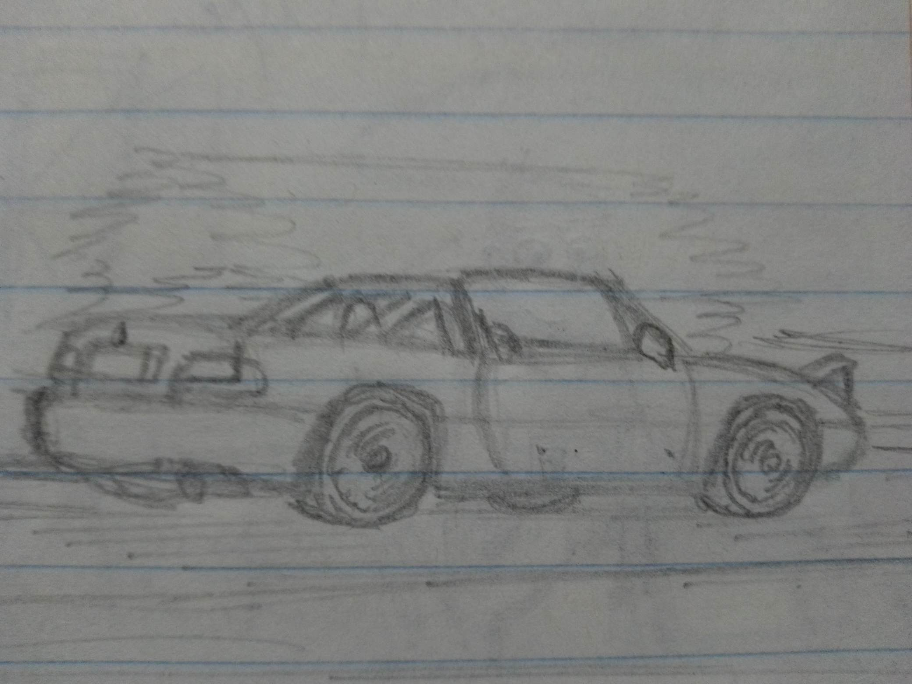

Es una historieta de accion sobre carreras callejeras creada en 2016 por angel eulogio de leon pecina, por el momento se tiene un episodio cuya produccion duró de 2019 a 2022. La historieta transcurre en la ciudad de Monterrey, Si bien no ha sido publicada aún, ha recibido opiniones mixtas por las pocas personas que la han leído, calificándola como una obra con potencial desperdiciado, en especial por que hace referencia a diversos juegos de carreras, que en su mayoria, casi nadie ha jugado o conoce.
la historieta trata de las desventuras que vive un joven en su dia a dia, y cómo este descubre que es bueno para las carreras callejeras y su sueño de volverse un piloto profesional. Se supone que deberia ser episodica con una historia de fondo que avanza en cada episodio, pero no se ha podido continuar con ese plan inicial por diversos motivos.
Es un joven que se muda a una casa en san bernabe y por motivos economicos debe buscar trabajo, s
El jefe de su trabajo que tiene un pasado oscuro, y termina arreglando y lidiando con los destrozos que hacen los empleados
El compañero de trabajo que es bueno en todo y se lleva bien con todos, pero tiene sus inseguridades
El encargado de la administracion del trabajo, algo amargado y que siempre busca mostrar una imagen exitosa sobre los demas
El compañero de trabajo astuto y tranquilo que a veces le hace bromas al grupo
Es el compañero del grupo que sirve como alivio cómico del trabajo. es un personaje que hace antes de pensar y que las cosas suelen salir como no espera que lo hagan, tambien siempre es que sale regañado, junto con el protagonista.
-El auto del protagonista es un Kyushu Tsukuba, el cual es una version sin derechos de autor del nissan tsuru
-la historieta realmente transcurre en Monterrey
-el autor tuvo que usar animales antropomorfos porque no lograba hacer que las personas se vieran distintos, por estos cambios en la conceptualizacion del cómic
se ralentizó la produccion del mismo y se elaboraron 5 borradores.
- en el borrador actual se hacen referencia a los siguientes juegos: forza horizon, ridge racer type 4, sonic, y forza motorsport 4.
-se espera que se divida el capitulo 1 en dos debido a su extensa duracion.
-los personajes se inspiran en compañeros que el autor tuvo en secundaria.
-todas las marcas, eventos, empresas y productos dentros del cómic son ficticios o parodias.
|  |
Usted se encuentra en la página 1
| Pagina 1 (historieta) | | Pagina 2 (kyushu) | | Pagina 3 |